2001 After Burn Report
Welcome
While BRC Census has been producing reports since 2002, it is hard to compare recent data with reports from earlier years (before 2013) because of important differences in methodology, from a convenience sample of self-selected Census takers on-playa to a weighted online survey conducted after the Man burns.
About You
Age
Age
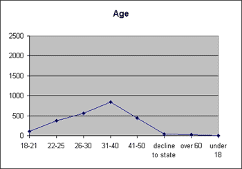
Gender
Gender
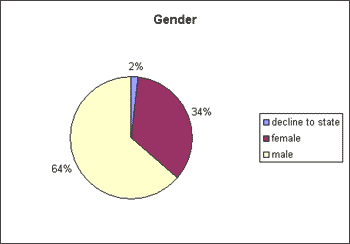
Income
Income
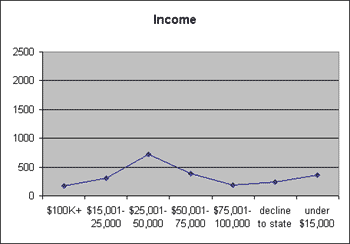
Industry
Industry
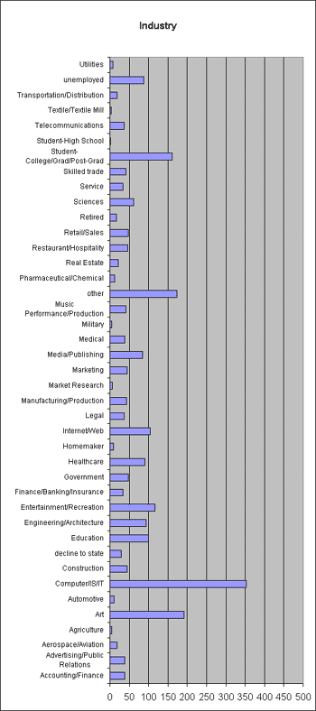
Political Affiliation
Political Affiliation
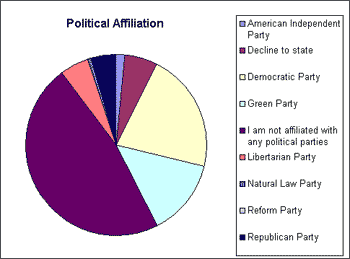
Burning Man Experience
Discovering Burning Man
How did you hear about Burning Man?
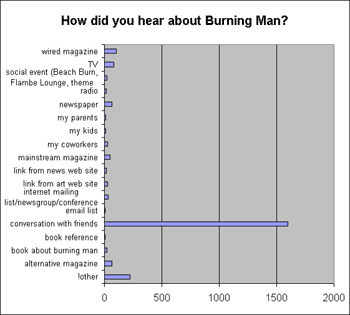
How long after hearing about Burning Man did you wait until your first event?
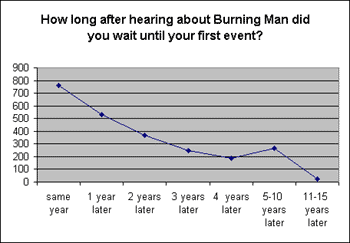
Attendance
Which of the following years have you attended the event?
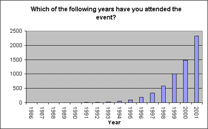
Volunteering
Did you do any volunteer work with any Burning Man volunteer groups for the 2001 event before you went to the playa?
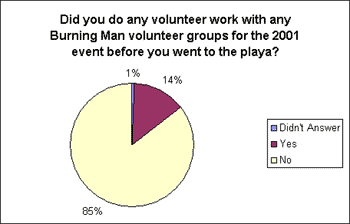
Did you do any volunteer work with the Burning Man volunteer groups for the 2001 event while on the plya?
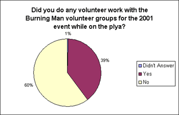
Arrival and Departure
Arrival
What day did you arrive on the plya?
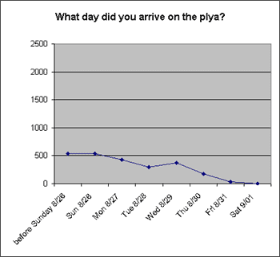
What time of day did you arrive on the plya?
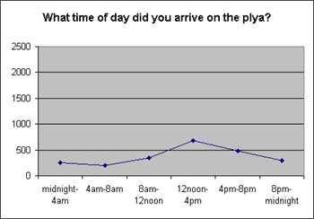
At the Gate
Were you given a Black Rock Gazette, What Where When guide, and BRC map at the gate or greeters stations?
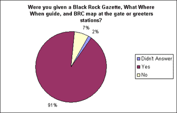
How was your Greeters experience?
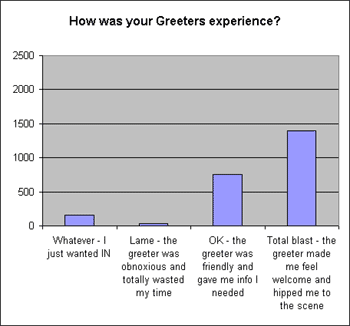
Departure
When did you leave the event?
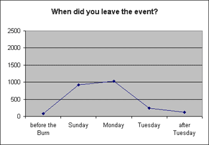
How long did it take to leave the event?
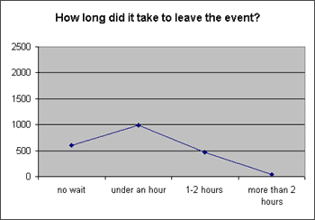
Was your departure delayed due to the Sunday night road closure?
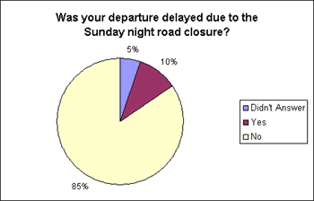
Camping
Choosing a Camp
How did you choose where to set up your camp?
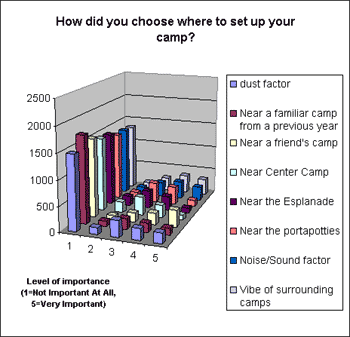
Where did your campmates come from?
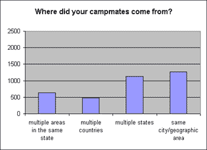
Did you collaborate with other people in an organized camp or theme camp to share resources?
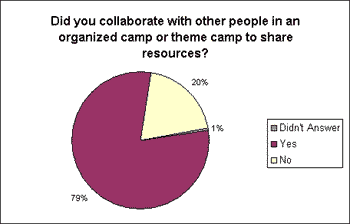
Shelter
What kind of shelter(s) did you bring with you to the plya?
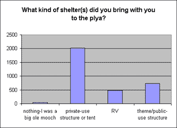
Bikes
Did you bring a bike with you?
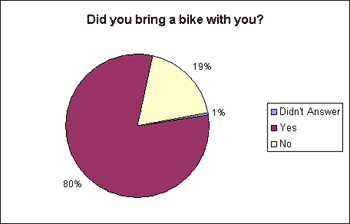
What did you do with your bike if you didn't bring it home?
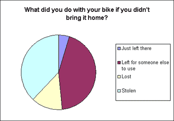
Pistachios
Did you bring pistachio nuts with shells?
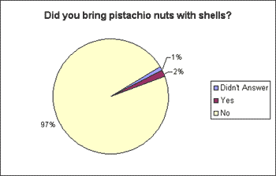
Did you know pistachio shells are the most common piece of MOOP?
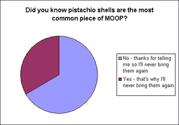
Life on the Playa
Weather
How did you handle the weather?
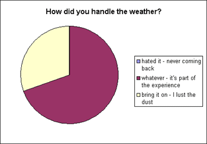
What did you do during the dust storms?
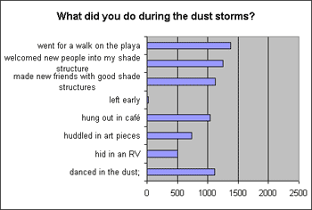
Services
How were the porta potties?
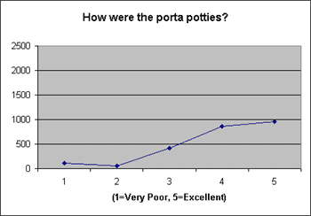
Rating of RV service
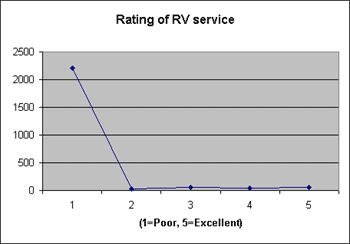
While on the playa, did you visit Playa Information Services?
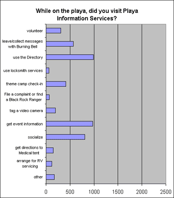
Did you listen to Burning Man Information Radio, 105.7, at any time on the playa?
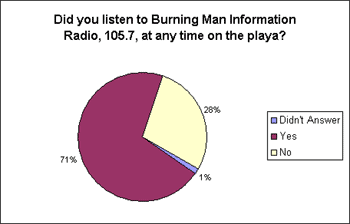
Rangers and Law Enforcement
Did you interact with Black Rock Rangers?
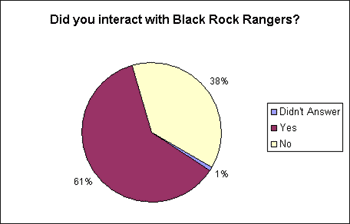
Did you have any encounters with any of the following law enforcement agencies while on the playa?
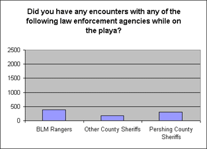
Did you encounter law enforcement outside the event?
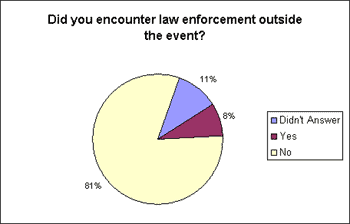
What were your encounters with law enforcement for?
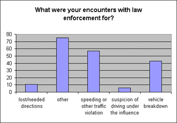
Spending
Money Spent
Money spent East
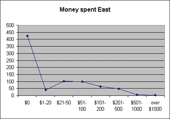
Money spent in Lovelock, Pershing County
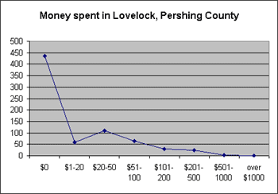
Money spent in Reno, Fernley, Washoe County
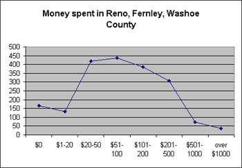
Money spent on supplies for Burning Man
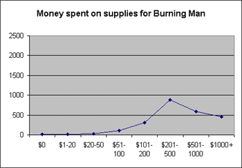
Travel Costs
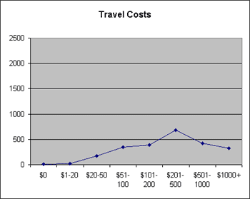
Afterward
Life Change
Did you have a life changing experience?
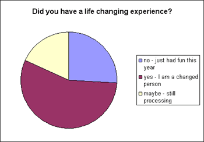
Black Rock Arts Foundation
Are you aware of the Black Rock Arts Foundation?
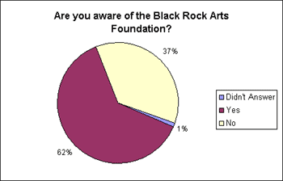
Black Rock Gazette
How would you feel about loosing the BRG?
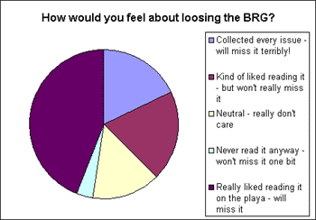